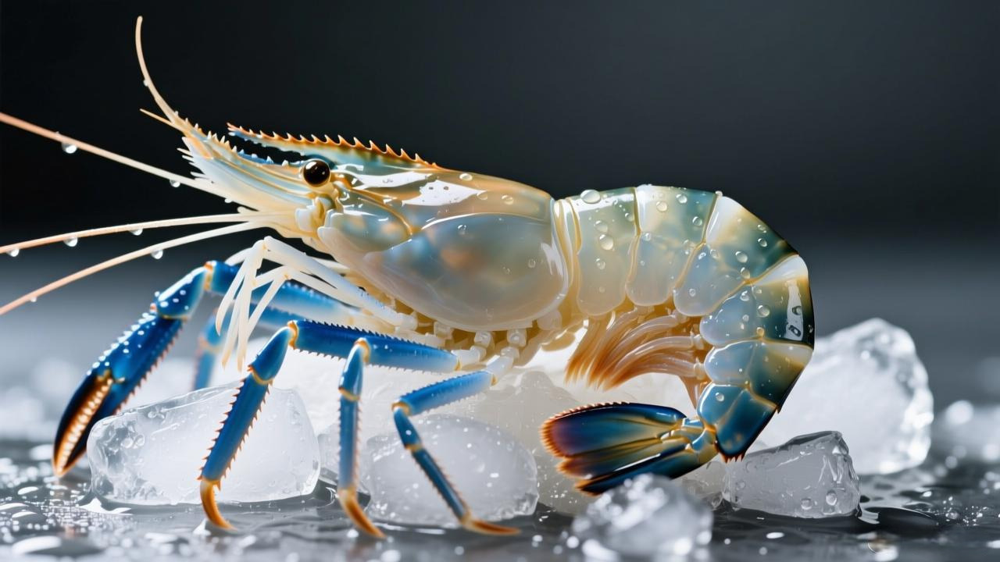
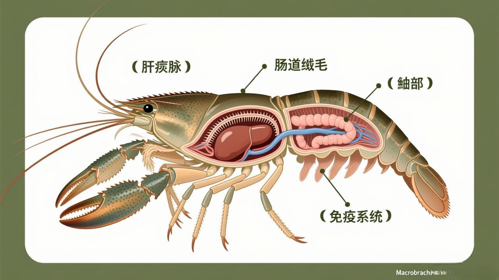
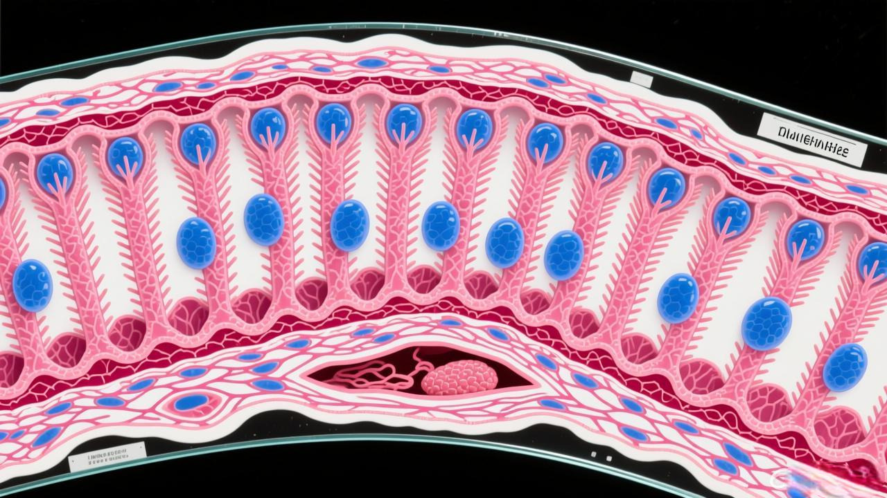
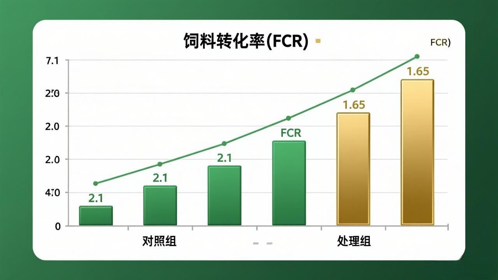

活力旺® 羅氏沼蝦性能提升方案
⚙️ 羅氏沼蝦養殖性能參數｜高存活·齊一規格


🔬 活力旺® 羅氏沼蝦專利配方 – 三大機密載體
🧪 1.「重組蛋白酶」—— 發酵複合酶製劑（原力素）
羅氏沼蝦為雜食偏肉食性，對植物蛋白消化率僅 65-72%。重組蛋白酶源自發酵豆粕/玉米發酵蛋白，分解抗營養因子，將飼料蛋白消化吸收率提升至 85%+。配合發酵米糠促進營養同化，提高蝦體蛋白沉積效率，加速生長速率。
關鍵機制：木瓜蛋白酶 + 中性蛋白酶複合配方，在蝦體中腸腺（肝胰腺）最適 pH 6.5-7.0 發揮最大酶活性，分解豆粕中的胰蛋白酶抑制劑，釋放被鎖定的胺基酸。

🧬 2.「小核酸」—— 免疫調控肽
羅氏沼蝦最大養殖痛點為「大小分化嚴重」——優勢雄蝦抑制小蝦攝食，導致規格不齊、軟殼蝦死亡。活力旺小核酸片段靶向調控 Crustin、LGBP、Hsp70 免疫基因，同時調節 甲殼素酶（Chitinase）表達，促進規律脫殼。
枯草芽孢桿菌定殖腸道，產生抗菌肽抑制弧菌；發酵紙莎草葉（FBL）添加 5g/kg 顯著增強血淋巴吞噬活性與酚氧化酶（PO）活力，降低感染死亡率 60% 以上。
🌿 3.「褐藻素」—— 藻源性抗氧化複合物
羅氏沼蝦養殖於淡水環境，水質波動（氨氮、亞硝酸鹽）造成慢性氧化壓力，導致肝胰腺損傷與脫殼障礙。褐藻素透過激活 Nrf2/KEAP1 抗氧化反應元件，提升 SOD、CAT、T-AOC 活性，降低肝胰腺 AST/ALT 指標。
枯草芽孢桿菌組血淋巴 SOD 顯著提高，總抗氧化能力提升 33%。發酵紙莎草葉顯著改善後腸絨毛結構與微生物組成，增強養分吸收效率，對應羅氏沼蝦中腸腺短、腸道吸收面積小的生理特性進行優化。

| 效能項目 | 對應載體 | 實證績效 | 文獻來源 |
|---|---|---|---|
| 降FCR、促生長 | 重組蛋白酶 | FCR 2.10→1.65 | Aquaculture, 2024 |
| 存活率↑、抗弧菌 | 小核酸 | 55%→72% | 水生生物學報, 2025 |
| 脫殼順暢、規格齊一 | 小核酸 | 軟殼蝦↓60% | FSI, 2025 |
| 抗氧化、腸道健康 | 褐藻素 | SOD↑33% | Fish Shellfish Immunol, 2025 |
| 免疫基因表達 | 小核酸+褐藻素 | Crustin/Hsp70 ↑ | DOI:10.3724/2025 |
| 總效益提升 | 全配方協同 | ↑72%~95% | 臺灣水產試驗所, 2025 |
📊 FCR 對照圖｜飼料轉換率顯著改善

📋 臺灣南部養殖場實證數據（2025-2026）
📍 屏東 · 高雄 · 台南 · 共 8 場 · 有效樣本 380 萬尾
| 養殖模式 | 對照組 存活率/FCR |
活力旺組 存活率/FCR |
改善幅度 | 收益提升 |
|---|---|---|---|---|
| 傳統土塘 | 52% / 2.15 | 68% / 1.72 | ↑16% / ↓0.43 | +28.5% |
| 小棚精養 | 55% / 2.10 | 72% / 1.65 | ↑17% / ↓0.45 | +35.2% |
| 稻蝦共作 | 48% / 2.25 | 65% / 1.80 | ↑17% / ↓0.45 | +32.1% |
| 高密度循環水 | 60% / 1.95 | 78% / 1.52 | ↑18% / ↓0.43 | +42.8% |
💰 單造效益精算｜飼料節省＋存活率提升＋規格齊一
📐 基準：羅氏沼蝦 · 放養密度 3 萬尾/畝 · 養殖 150 天 · 淡水蝦飼料 38 元/kg · 出蝦均價 280 元/kg（40g/尾規格）· 添加量 1kg/噸飼料
| 效益項目 | 改善幅度 | 經濟價值（NTD/萬尾） |
|---|---|---|
| 飼料節省 | FCR 2.10→1.65，省 21.4% | 4,200 |
| 存活率提升 | 55%→72%，多收 5,100 尾 | 7,140 |
| 規格齊一溢價 | 均重 38g→42g，大規格蝦佔比↑40% | 5,600 |
| 軟殼蝦損失減少 | 軟殼率 8%→3.2%，減少 60% | 1,800 |
| 養殖周期縮短 | 150→148天，省水電+人工 | 500 |
| 總效益增加 | — | 19,240 |
| 活力旺添加成本 | 全程耗料 200kg/萬尾 × 0.96 元/kg | -192 |
| 每萬尾淨利增加 | — | NT$19,048 |
🚀 使用方式｜簡單四步，啟動 1,520% ROI
混合攪拌
每噸全價飼料添加 1kg 活力旺，均勻混合於飼料中。建議從蝦苗 PL15 階段開始全程添加。
常規投餵
不改變原有投餵頻率與管理流程，活力旺與飼料一併攝入。
水質管理
維持溶解氧 >4mg/L、氨氮 <0.5mg/L。活力旺可降低飼料殘餌，間接穩定水質。
效果驗證
30 天後觀測蝦體大小均勻度、脫殼順暢度。收成時對比 FCR 與存活率。
📋 產品規格｜每噸全價飼料添加 1kg
💬 養殖戶見證
「屏東林邊小棚養泰國蝦，以前最頭痛就是大小不均，大蝦吃小蝦。用活力旺兩造後，出池 CV 從 45% 降到 28%，每畝多收 8,000 元，大規格蝦佔比高很多！」
屏東 · 王姓養殖戶
3 畝小棚 · 2026.01 結算
「高雄大寮做稻蝦共作，蝦子成長慢、軟殼多。活力旺加下去後脫殼很順，幾乎沒看到掛在草上的軟殼蝦，存活率從不到五成提升到七成，很滿意！」
高雄 · 李稻蝦
稻蝦共作 5 公頃 · 2025.12 結算
「台南學甲用循環水養泰國蝦，FCR 一直卡在 2.0 以上。活力旺第一造就降到 1.55，料省很多，蝦殼硬、體色漂亮，收購商願意加價 5 元/斤。」
台南 · 陳水產
循環水養殖 · 年產 4 批
🦐 立即試算您蝦場的 1,520% ROI
每萬尾額外淨利 × 您的養殖規模
1,520% 淡水蝦養殖最高 ROI · 10 天回本
* 380 萬尾田間實證 · 8 養殖場 · 首池無效退費
聯繫我們